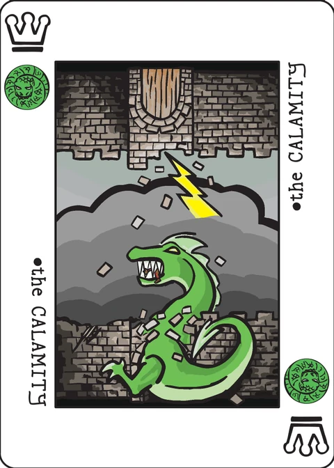

Advent of the Wyrms
a solitaire set-collection game
| Designed by | Shane Lelwica-Hebeisen |
|---|---|
| Players | 1 |
| Length | 5–10 minutes |
| Extra material | Extended Decktet |
Story
A sect of conjurers has unearthed a dangerous tome, which speaks of the primordial wyrms that once ruled the mortal world. These conjurers believe that if they are successful in bringing about the calamity, a mythical event that foretells the return of the wyrms, they will be able to craft a new world over which they will preside. Having discovered the conjurers’ plans, you must stop them from bringing the ancient wyrms back to consume all living souls.
Setup
- Add the extended deck cards and shuffle the deck.
- Draw 4 cards. If you draw a card with the wyrms suit, set it aside and continue drawing until you have 4 cards that do not have the wyrms suit. Then, shuffle any cards you have set aside back into the deck.
Gameplay
Drawing & Playing Cards
Game play occurs over a series of turns. Each turn, you must:
- Choose one: Add a card to an incantation or discard a card.
- Draw a card from the deck. If a card with a wyrms suit is drawn, you must negate it (see “Negating Wyrms Cards”).
Incantations
Incantations are the sets being collected during Advent of the Wyrms. You must craft 4 incantations to win the game. An incantation is a set of 3 cards that share 1 suit across all 3 cards and are played in ascending rank order. You may have up to 5 incantations being crafted simultaneously. Once a card is played as part of an incantation, it may not be discarded or moved.
Negating Wyrms Cards
Cards with the wyrms suit are treated differently in Advent of the Wyrms. They represent the conjurer sects’ summoning spells that are used in restoring the wyrms to life. Whenever a card with a wyrms suit is drawn, you must dedicate your own magical energies towards negating these spells. Cards with wyrms suits can be negated in 4 ways:
- Discard a card that matches the non-wyrms suit of the card. The ace of wyrms and crown of wyrms do not have other suits besides wyrms suits. Therefore, they cannot be negated by discarding a card that matches the non-wyrms suit.
- Discard a card whose rank equals/exceeds the rank of the wyrms card. Aces are ranked as 1, crowns are ranked as 10, pawns are ranked as 11, and courts are ranked as 12. The Excuse does not have a rank.
- Discard 2 cards from the top of the deck. Any wyrms cards that would be discarded are set aside instead. Shuffle the set aside cards back into the deck after you have refilled your hand to 4 cards (see below).
- Discard The Excuse card from your hand.
After negating a wyrms card, draw cards from the deck until you have 4 cards in hand. If you draw a wyrms card during the process of re-filling your hand, immediately stop drawing cards and choose how you would like to negate the card.
If your hand is reduced to 0 cards, draw from the deck until you have 4 cards in hand. If you draw any wyrms cards while re-filling your hand after having your hand reduced to 0 cards, set those cards aside and continue drawing until you have 4 non-wyrms cards. Then, shuffle the set aside wyrms cards back into the deck.
The Excuse
The Excuse card also has a special function. When you have The Excuse card in hand and you draw a card with the wyrms suit, you may discard The Excuse to negate the wyrms card. You may also play The Excuse card as a wild card in any of your incantations.
Winning & Losing
Game play continues until one of the following conditions is met:
- You complete your fourth incantation: You have successfully contained the sect of conjurers’ magical rebellion and kept the mortal world safe from the wrath of the ancient wyrms. YOU WIN!
- You would draw from the deck and there are no cards remaining: You were unable to complete your incantations in time and the sect of conjurers were successful in casting their summoning spells. The calamity has occurred and the wyrms have emerged from the darkness, ready to re-take the world that was once theirs. YOU LOSE…
If you wish to score your performance, count the number of cards remaining in the deck to calculate your score. You always score 0 points when you lose, as there are no cards left in the deck.
Any feedback/scores/experiences of playing that you'd be willing to share would be greatly appreciated! Please enjoy!
Note on this implementation
The wyrms suit is the Daemons suit. The Decktet’s six suits are Moons, Suns, Waves, Leaves, Wyrms and Knots on the wiki; this app’s card data calls the last two Daemons and Crowns (the naming of The Decktet Book). So “wyrms cards” here are the fourteen Daemons-suited cards of the 45-card deck.
Ranks follow this game’s own text exactly: Ace 1 … 9, Crown 10, Pawn 11, Court 12, and The Excuse has no rank — note this is not the usual Decktet rank line, which puts Courts below Pawns.
Ascending order is read as: every card added to an incantation must outrank every card already in it. The shared suit is fixed by the first card played there — you choose which of its suits when it has two or three — and later cards must carry that suit. The Excuse, as a wild, fits any incantation’s suit, adds no rank constraint, and may also start one (the incantation then takes its suit from the next card played).
Five at a time is read as five incantations still being crafted: once a third card completes an incantation it is set aside and its slot is free again, matching “you may have up to 5 incantations being crafted simultaneously”.
Negation details. Method 3 needs at least 2 cards in the deck (it discards exactly two). A drawn wyrms card that can be negated at all always waits for your choice; if a wyrms card is drawn and no method is legal (no matching or high enough card, no Excuse, fewer than 2 cards in the deck), the game is lost — the wiki does not cover that corner. The initial hand of 4 is drawn with the set-aside rule, so no negation happens before play begins. The score is the cards left in the deck when you win (set-aside cards have been shuffled back by then); a loss always scores 0.
Credits
Advent of the Wyrms was designed by Shane Lelwica-Hebeisen.
These rules are copied from the Advent of the Wyrms page of the Decktet wiki (page revision 9, 1 May 2020) so they can be read offline, under the wiki’s CC BY-NC-SA 3.0 licence. Cards by P.D. Magnus, same licence.
Further reading: The suit of Wyrms at the wiki